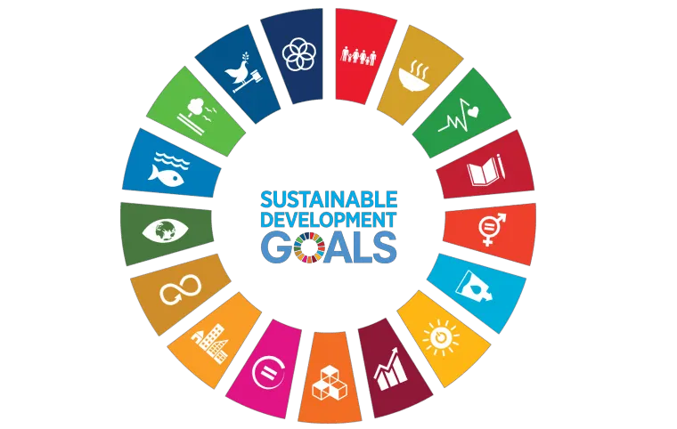
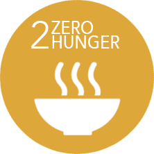

SDGs
Sustainable Development Goals
SDG
SDG is a collection of 17 global goals set by the United Nations in 2015 to address critical issues such as poverty, hunger, health, education, climate change, and inequality. These goals aim to promote peace, prosperity, and environmental protection by 2030, encouraging worldwide collaboration to create a sustainable and equitable future for all.
Zero Hunger is one of the 17 Sustainable Development Goals (SDGs) adopted by the United Nations. This goal aims to eradicate hunger worldwide, ensure access to nutritious and sustainable food for all, and promote sustainable agriculture by 2030. It focuses on ending malnutrition, especially in children, and supporting small-scale farmers to strengthen food security. By adopting "Zero Hunger," our NGO, Food Bridge, is committed to fighting hunger and food waste, while raising awareness and mobilizing communities toward sustainable solutions.